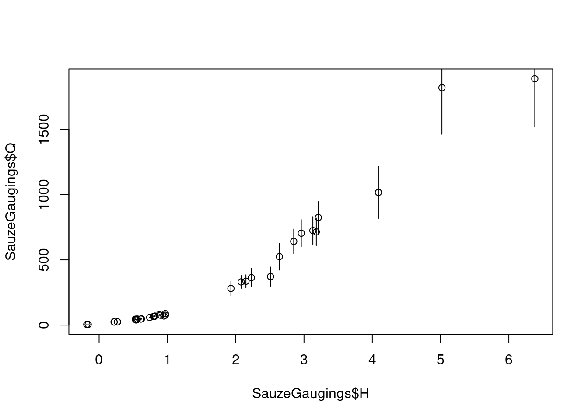
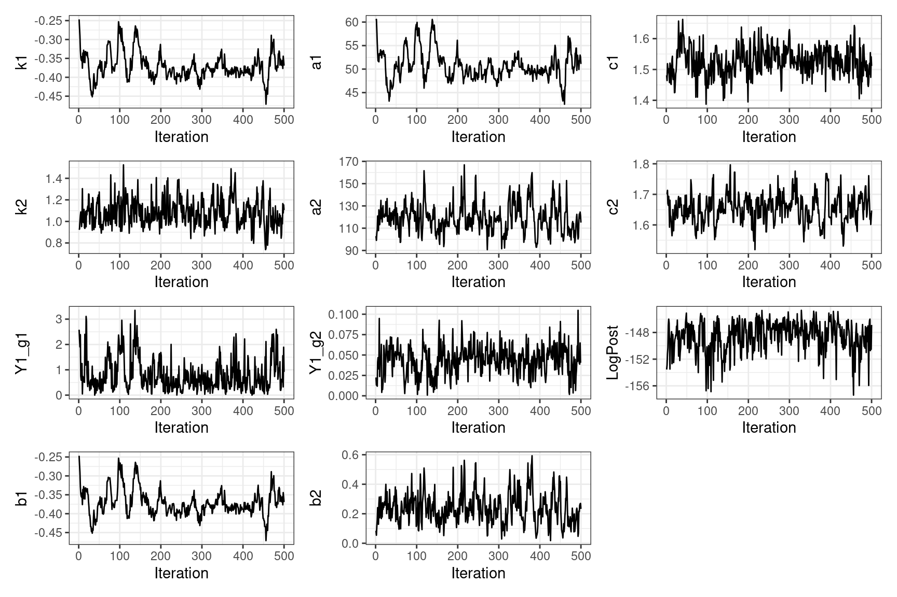
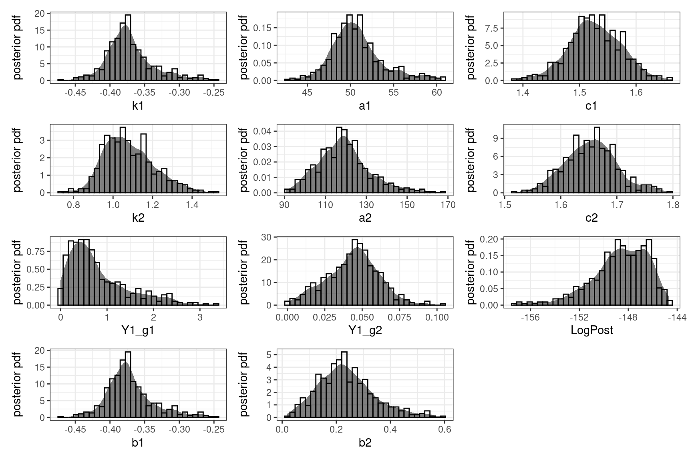
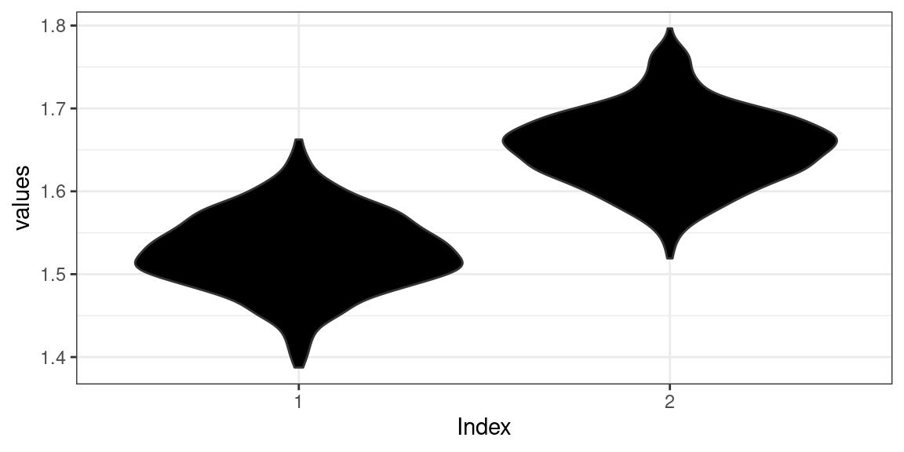
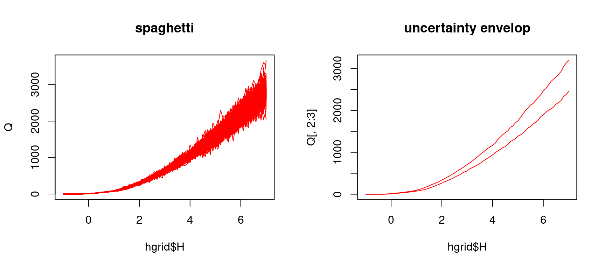
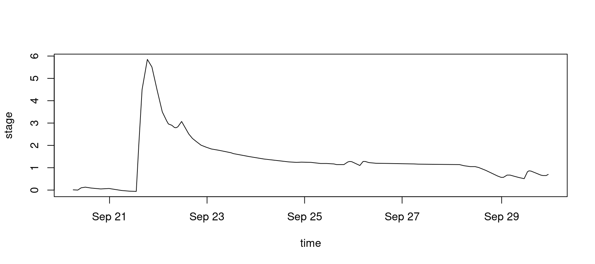
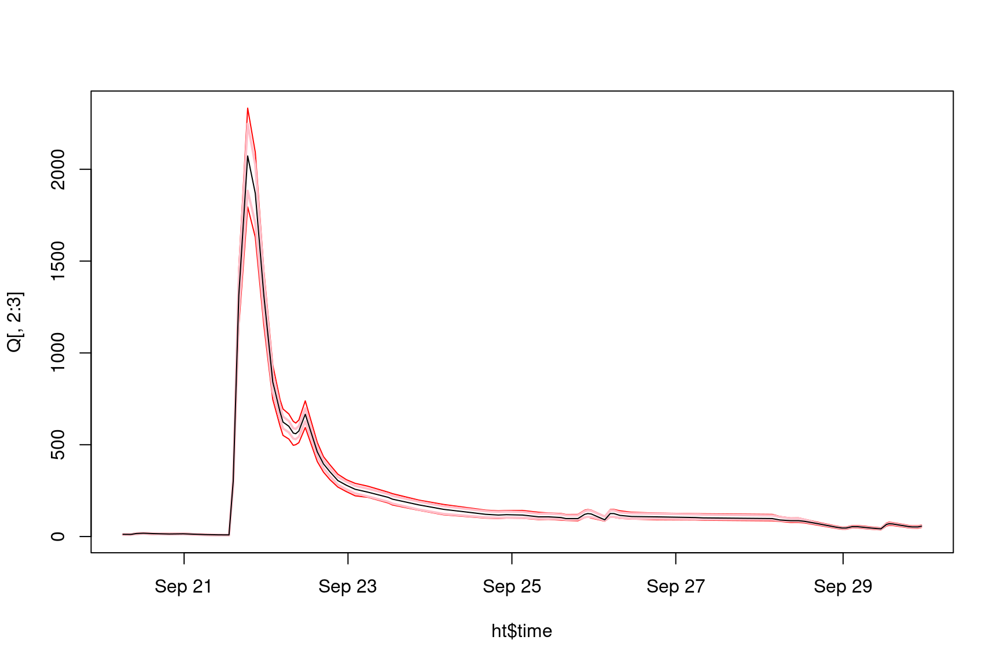
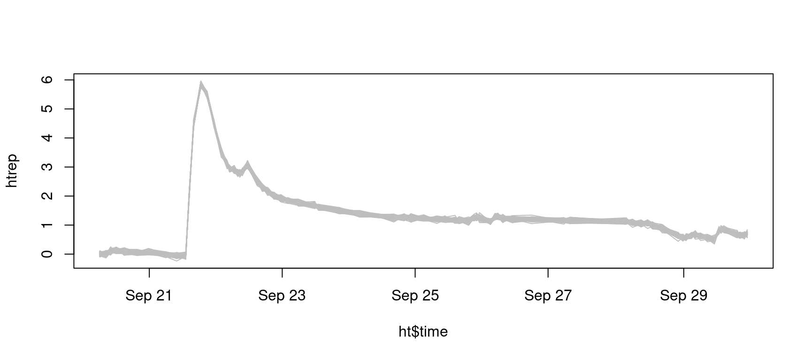
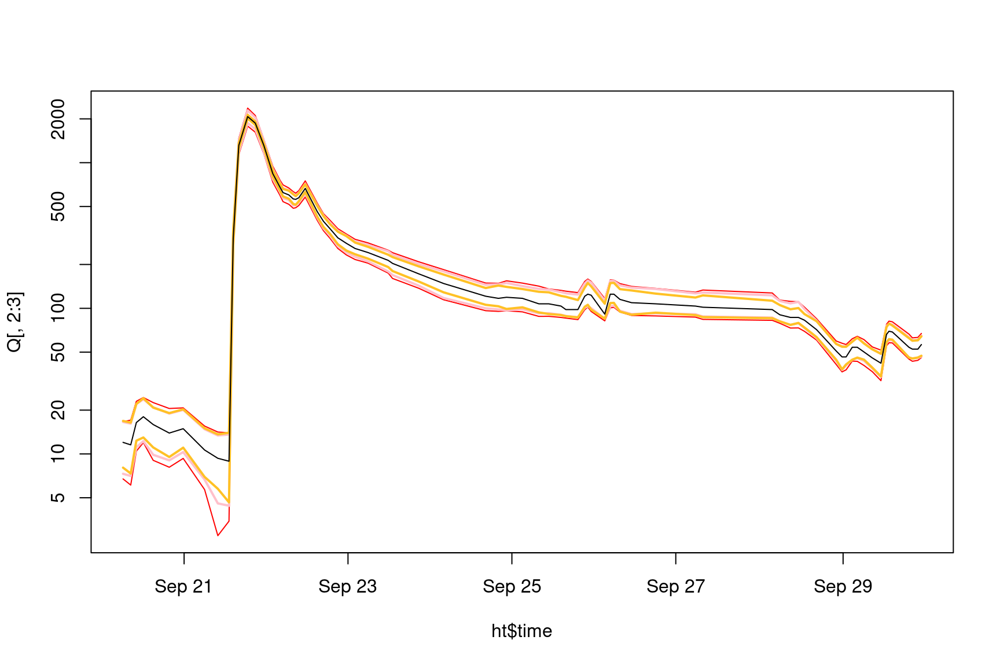

1 Introduction
BaM (Bayesian Modeling) is a framework to estimate a model using Bayesian inference - any model in general, but BaRatin’s rating curve in particular. The R package RBaM is built as an R User Interface to BaM’s computational engine. It defines classes (objects’ properties and methods) for the various building blocks of a BaM case study. Its typical usage is as follows:
- Assemble the dataset of input/ouput variables.
- Define the model and set prior distributions for its parameters.
- Perform Bayesian-MCMC inference.
- Perform predictions.
RBaM needs to be installed once then loaded every time it is used.
# devtools::install_github('BaM-tools/RBaM') # First use: install the package from GitHub
library(RBaM) # Load packageThe catalog of distributions that can be used for prior specification can be accessed as shown below. The command also gives the list of available models, but here we’ll solely focus on BaRatin.
getCatalogue()## $distributions
## [1] "Gaussian" "Uniform" "Triangle" "LogNormal" "LogNormal3"
## [6] "Exponential" "GPD" "Gumbel" "GEV" "GEV_min"
## [11] "Inverse_Chi2" "PearsonIII" "Geometric" "Poisson" "Bernoulli"
## [16] "Binomial" "NegBinomial" "FlatPrior" "FlatPrior+" "FlatPrior-"
## [21] "FIX" "VAR"
##
## $models
## [1] "TextFile" "BaRatin"
## [3] "BaRatinBAC" "SFD"
## [5] "SGD" "SWOT"
## [7] "Vegetation" "AlgaeBiomass"
## [9] "DynamicVegetation" "Recession_h"
## [11] "Segmentation" "Sediment"
## [13] "SuspendedLoad" "Linear"
## [15] "Mixture" "Orthorectification"
## [17] "GR4J" "Tidal"
## [19] "SFDTidal" "SFDTidal2"
## [21] "SFDTidalJones" "SFDTidal4"
## [23] "SFDTidal_Qmec" "TidalODE"
## [25] "TidalRemenieras" "SFDTidal_Sw_correction"
## [27] "MAGE" "HydraulicControl_section"2 Estimation of a BaRatin rating curve
The first thing to do is to define the workspace, i.e. the folder where all result files will be written.
workspace=file.path(getwd(),'BaM_workspace')The example used below is based on the rating curve for the Ardèche river at the Sauze-Saint-Martin hydrometric station.
2.1 Defining streamgauging data
The streamgauging dataset used to calibrate the rating curve is provided with the RBaM package. This data frame is named SauzeGaugings and contains three columns: stage H, discharge Q and discharge standard uncertainty uQ. WARNING: note that uncertainty is expressed here as a standard deviation, not as an expanded uncertainty as in BaRatinAGE. The latter is equal to 1.96 times the former, and corresponds to the half-length of a 95% interval under a Gaussian assumption.
# Plot data in the SauzeGaugings dataset
# Note the 1.96 factor to move from the standard uncertainty to 95% uncertainty intervals
plot(x=SauzeGaugings$H,y=SauzeGaugings$Q)
segments(x0=SauzeGaugings$H,y0=SauzeGaugings$Q-1.96*SauzeGaugings$uQ,y1=SauzeGaugings$Q+1.96*SauzeGaugings$uQ)
The code below is used to let RBaM know what variable to use as inputs/outputs of the model. Since the model considered here is a rating curve, stage is the input and discharge the output. Note that the standard uncertainty on the gauged discharge is also passed here - if omitted, it will be considered to be zero. Again, beware of the difference with BaRatinAGE: RBaM expects a standard uncertainty, not an expanded uncertainty.
# Define the calibration dataset by specifying
# inputs (X), outputs (Y) and standard uncertainty on the outputs (Yu).
# A copy of this dataset will be written in data.dir.
D=dataset(X=SauzeGaugings['H'],Y=SauzeGaugings['Q'],Yu=SauzeGaugings['uQ'],data.dir=workspace)2.2 Defining the rating curve model
The Sauze-Saint-Martin station is characterized by a simple 2-control hydraulic configuration, with a natural riffle acting as the low-flow section control, and a wide rectangular channel acting as the high-flow control, as illustrated below.

Hydraulic configuration for the Ardèche River at Sauze-Saint-Martin station (water flows from the picture top to bottom, staff gauge is shown in yellow). (a) properties of the high-flow controlling chanel; (b) zoom on the low-flow controlling section.
The code below specifies the priors on the 6 rating curve parameters: activation stage, coefficient and exponent for each of the two controls. For more details on the prior specification process at this station, please refer to Le Coz et al., 2014.
# Parameters of the low flow section control: activation stage k, coefficient a and exponent c
k1=parameter(name='k1',init=-0.5,prior.dist='Uniform',prior.par=c(-1.5,0))
a1=parameter(name='a1',init=50,prior.dist='LogNormal',prior.par=c(log(50),1))
c1=parameter(name='c1',init=1.5,prior.dist='Gaussian',prior.par=c(1.5,0.05))
# Parameters of the high flow channel control: activation stage k, coefficient a and exponent c
k2=parameter(name='k2',init=1,prior.dist='Gaussian',prior.par=c(1,1))
a2=parameter(name='a2',init=100,prior.dist='LogNormal',prior.par=c(log(100),1))
c2=parameter(name='c2',init=1.67,prior.dist='Gaussian',prior.par=c(1.67,0.05))The control matrix is then defined as follows:
# Define control matrix: columns are controls, rows are stage ranges.
# Here the matrix means that the first control only is active for the first stage range,
# and the second control only is active for the second stage range.
controlMatrix=rbind(c(1,0),
c(0,1))Finally, this information is passed to RBaM by creating a model object as follows:
# Stitch it all together into a model object
M=model(ID='BaRatin', # ID of the considered model - here, BaRatin
nX=1,nY=1, # number of input/output variables: here 1 input (H) and 1 output (Q)
par=list(k1,a1,c1,k2,a2,c2), # list of model parameters - respect the order (k,a,c) for each control
xtra=xtraModelInfo(object=controlMatrix)) # use xtraModelInfo() to pass the control matrixWe have now defined the model M to be calibrated and the calibration dataset D: we can hence proceed to calibration.
2.3 Running BaM and exploring MCMC samples
The function BaM is used to perform parameter estimation. This will run a MCMC sampler and save the result into the workspace.
BaM(mod=M,data=D) # Estimate the parameters of model M using calibration data DMCMC samples can now be read. There are 2 MCMC files: ‘Results_MCMC.txt’ contains raw MCMC simulations and is hence quite big. ‘Results_Cooking.txt’ contains ‘cooked’ simulations, i.e. after ‘burning’ the first part of iterations and ‘slicing’ what remains (see here for more detailed explanations), and may be favored in most cases. Note that MCMC properties can be modified if needed (see help files ?BaM, ?mcmcOptions and ?mcmcCooking).
# Read 'cooked' MCMC file in the workspace
MCMC=readMCMC(file.path(workspace,'Results_Cooking.txt'))
head(MCMC)## k1 a1 c1 k2 a2 c2 Y1_g1 Y1_g2
## 1 -0.246780 60.4238 1.48103 0.922899 102.8730 1.70117 2.582080 0.0224468
## 2 -0.269413 60.5724 1.46413 0.930665 99.0574 1.70117 2.232150 0.0131388
## 3 -0.291071 58.2851 1.51878 1.000870 105.3410 1.71316 1.904870 0.0157354
## 4 -0.327582 55.5986 1.50333 1.053400 108.8020 1.67034 2.385710 0.0118051
## 5 -0.346240 53.3239 1.50333 1.087950 120.9590 1.66413 0.756269 0.0414687
## 6 -0.353747 51.7361 1.49109 1.045050 110.3710 1.69349 0.590987 0.0467566
## LogPost b1 b2
## 1 -153.555 -0.246780 0.0845701
## 2 -152.904 -0.269413 0.0544618
## 3 -151.209 -0.291071 0.1125240
## 4 -150.324 -0.327582 0.1588370
## 5 -146.927 -0.346240 0.2412690
## 6 -145.997 -0.353747 0.1859880A few functions are provided with the package to explore MCMC samples. The first one shows the MCMC-simulated values for each parameter (a.k.a. a “trace plot”) and is useful to visually assess convergence.
# Trace plot for each parameter, useful to assess convergence.
plots=tracePlot(MCMC)
patchwork::wrap_plots(plots,ncol=3)
The second plotting function creates a density plot for each parameter, which represent the marginal posterior density.
# Density plot for each parameter
plots=densityPlot(MCMC)
patchwork::wrap_plots(plots,ncol=3)
The third plotting function creates a violin plot which can be useful to compare the posterior distributions of comparable parameters (here for instance the exponent of each control).
# Violin plot, useful to compare 'comparable' parameters.
violinPlot(MCMC[c('c1','c2')])
2.4 Estimating the rating curve and its uncertainty
The rating curve and its uncertainty can be deduced from the MCMC samples. To achieve this, one first needs to define the stage grid on which the rating curve is computed, and to define a prediction object that specifies which types of uncertainty are to be considered. For instance, the total rating curve uncertainty encompasses parametric uncertainty (i.e. due to the imperfect knowledge of the rating curve parameters) and structural uncertainty (i.e. due to the approximate nature of any rating curve).
# Define the grid of stage values on which the rating curve will be computed
hgrid=data.frame(H=seq(-1,7,0.1))
# Define a 'prediction' object for total rating curve uncertainty
totalU=prediction(X=hgrid, # stage values
spagFiles='totalU.spag', # file where predictions are saved
data.dir=workspace, # a copy of data files will be saved here
doParametric=TRUE, # propagate parametric uncertainty, i.e. MCMC samples?
doStructural=TRUE) # propagate structural uncertainty ?Uncertainty propagation is then performed by the same function BaM as before, but ran in “prediction mode”. In particular the doCalib=FALSE and doPred=TRUE options specify that calibration has already been performed, and the task is now to use the existing MCMC samples to perform an uncertain prediction (namely, estimate the uncertain rating curve). Note that the word “prediction” is used here in the fairly loose and general sense of “estimating the uncertain output of the model”.
# Re-run BaM, but in prediction mode
BaM(mod=M,data=D, # model and data
pred=totalU, # prediction to be performed
doCalib=FALSE,doPred=TRUE) # Do not re-calibrate but do predictionsThe resulting ‘spaghetti files’ can be read from the workspace and plotted. Note that while spaghetti are the raw outputs of the predictions, it is often more convenient to plot probability intervals only. These have been computed automatically by BaM, and are saved in files with an ‘.env’ (like ‘envelop’) extension.
par(mfrow=c(1,2)) # plot figures in two panels on the same row
# Plot spaghetti representing total uncertainty
Q=read.table(file.path(workspace,'totalU.spag'))
matplot(hgrid$H,Q,col='red',type='l',lty=1,main='spaghetti')
# Plot 95% probability intervals for total rating curve uncertainty
Q=read.table(file.path(workspace,'totalU.env'),header=T)
matplot(hgrid$H,Q[,2:3],col='red',type='l',lty=1,main='uncertainty envelop')
The same workflow can be used to estimate parametric rating curve uncertainty (corresponding to “turning off” structural uncertainty) and the maxpost rating curve (corresponding to “turning off” both parametric and structural uncertainties).
# Define a 'prediction' object for parametric uncertainty only - note the doStructural=FALSE
paramU=prediction(X=hgrid,spagFiles='paramU.spag',data.dir=workspace,
doParametric=TRUE,doStructural=FALSE)
# Define a 'prediction' object with no uncertainty - this corresponds to the 'maxpost' rating curve
maxpost=prediction(X=hgrid,spagFiles='maxpost.spag',data.dir=workspace,
doParametric=FALSE,doStructural=FALSE)
# Run BaM in prediction mode
BaM(mod=M,data=D, # model and data
pred=list(paramU,maxpost), # predictions to be performed - when multiple, they have to be put in a list
doCalib=FALSE,doPred=TRUE) # Do not re-calibrate but do predictionsThis allows recreating the rating curve plot made in BaRatinAGE which superimposes total uncertainty, parametric uncertainty, the maxpost rating curve and the gaugings.
# Read and plot the envelop representing total uncertainty in red
Q=read.table(file.path(workspace,'totalU.env'),header=T)
matplot(hgrid$H,Q[,2:3],col='red',type='l',lty=1)
# Read and plot the envelop representing parametric uncertainty in pink
Q=read.table(file.path(workspace,'paramU.env'),header=T)
matplot(hgrid$H,Q[,2:3],col='pink',type='l',lty=1,add=TRUE)
# Read and plot the maxpost rating curve in black
Q=read.table(file.path(workspace,'maxpost.spag'))
matplot(hgrid$H,Q,col='black',type='l',lty=1,add=TRUE)
# Add gaugings
points(x=SauzeGaugings$H,y=SauzeGaugings$Q,pch=19)
segments(x0=SauzeGaugings$H,y0=SauzeGaugings$Q-1.96*SauzeGaugings$uQ,y1=SauzeGaugings$Q+1.96*SauzeGaugings$uQ)
2.5 Producing an uncertain discharge series
The production of an uncertain discharge series is nearly identical to the production of the uncertain rating curve: the only thing to do is to replace the stage grid by a stage time series, for instance the stage time series shown below (the data file can be downloaded here)
# Read and plot the stage time series
ht=read.table('SauzeHt.csv',header=T,sep=';',colClasses=c('POSIXct','numeric'))
plot(ht,type='l')
The code is the same as the one used previously for the rating curve, except that the stage series (ht['stage']) is used instead of the stage grid (hgrid).
# Define a 'prediction' object for total uncertainty
totalU=prediction(X=ht['stage'],spagFiles='totalU.spag',data.dir=workspace,
doParametric=TRUE,doStructural=TRUE)
# Define a 'prediction' object for parametric uncertainty only
paramU=prediction(X=ht['stage'],spagFiles='paramU.spag',data.dir=workspace,
doParametric=TRUE,doStructural=FALSE)
# Define a 'prediction' object with no uncertainty - this corresponds to the 'maxpost' discharge series
maxpost=prediction(X=ht['stage'],spagFiles='maxpost.spag',data.dir=workspace,
doParametric=FALSE,doStructural=FALSE)
# Run BaM in prediction mode
BaM(mod=M,data=D,pred=list(totalU,paramU,maxpost),doCalib=FALSE,doPred=TRUE)The resulting discharge series can be plotted with its uncertainties.
#Total uncertainty in red
Q=read.table(file.path(workspace,'totalU.env'),header=T)
matplot(ht$time,Q[,2:3],col='red',type='l',lty=1)
# Parametric uncertainty in pink
Q=read.table(file.path(workspace,'paramU.env'),header=T)
matplot(ht$time,Q[,2:3],col='pink',type='l',lty=1,lwd=2,add=TRUE)
# Maxpost discharge time series in black
Q=read.table(file.path(workspace,'maxpost.spag'))
matplot(ht$time,Q,col='black',type='l',lty=1,add=TRUE)
Note that no uncertainty in the stage time series has been considered so far. It is possible to do so by using “stage spaghetti”, i.e. many replicated stage time series representing stage uncertainty, instead of a single stage series. The example below shows how to generate these spaghetti considering independent Gaussian stage errors with a fixed standard deviation \(\sigma_h=5 \mathrm{cm}\). More advanced models could be considered (see this page) but for the time being RBaM does not provide any functionality for this - it is hence the user’s responsibility to generate the stage spaghetti.
set.seed(82487)
# Create 100 noisy replicates for ht, with a 5cm standard deviation, representing uncertainty
htrep=matrix(rnorm(n=NROW(ht)*100,mean=ht$stage,sd=0.05),nrow=NROW(ht),ncol=100)
# Plot stage spaghetti
matplot(ht$time,htrep,col='gray',type='l',lty=1)
The rest of the analysis proceeds as previously, simply replacing the unique stage series by stage spaghetti.
# Total uncertainty
totalU=prediction(X=list(htrep), # stage spaghetti, has to be encapsulated in a list
spagFiles='totalU.spag', data.dir=workspace,
doParametric=TRUE, doStructural=TRUE)
# param+stage uncertainties (structural uncertainty is turned off)
param_hU=prediction(X=list(htrep),spagFiles='param_hU.spag',data.dir=workspace,
doParametric=TRUE,doStructural=FALSE)
# stage uncertainty only (structural and parametric uncertainties are turned off)
hU=prediction(X=list(htrep),spagFiles='hU.spag',data.dir=workspace,
doParametric=FALSE,doStructural=FALSE)
# Run BaM in prediction mode
BaM(mod=M,data=D,pred=list(totalU,param_hU,hU),doCalib=FALSE,doPred=TRUE)This leads to the following plot. Note that a logarithmic y-axis is used to emphasize low and medium flows where the stage-induced uncertainty is noticeable.
# Total uncertainty in red
Q=read.table(file.path(workspace,'totalU.env'),header=T)
matplot(ht$time,Q[,2:3],col='red',type='l',lty=1,log='y')
# Parametric + stage uncertainties in pink
Q=read.table(file.path(workspace,'param_hU.env'),header=T)
matplot(ht$time,Q[,2:3],col='pink',type='l',lty=1,lwd=2,add=TRUE)
# Stage uncertainty only in yellow
Q=read.table(file.path(workspace,'hU.env'),header=T)
matplot(ht$time,Q[,2:3],col='goldenrod1',type='l',lty=1,lwd=2,add=TRUE)
# Maxpost discharge time series in black
Q=read.table(file.path(workspace,'maxpost.spag'))
matplot(ht$time,Q,col='black',type='l',lty=1,add=TRUE)
3 Conclusion
The RBaM package allows piloting BaRatin directly from R, without going through the clickable interface BaRatinAGE. While this may require a steeper learning curve, it also comes with significant advantages, especially for users that are already familiar with the R language:
- It offers more flexibility
- It facilitates the integration of BaRatin analyses into existing workflows
- It provides access to all the tools of the
Recosystem for data preparation, plotting, statistical analyses etc. - Importantly,
RBaMis not restricted to the BaRatin rating curve model. In particular models for complex rating curves (e.g. stage-fall-discharge curves, vegetation-affected curves, multi-period curves and more) are available throughRBaMbut not throughBaRatinAGE. In general, any new model will be available inRBaMwell before it becomes available inBaRatinAGE.